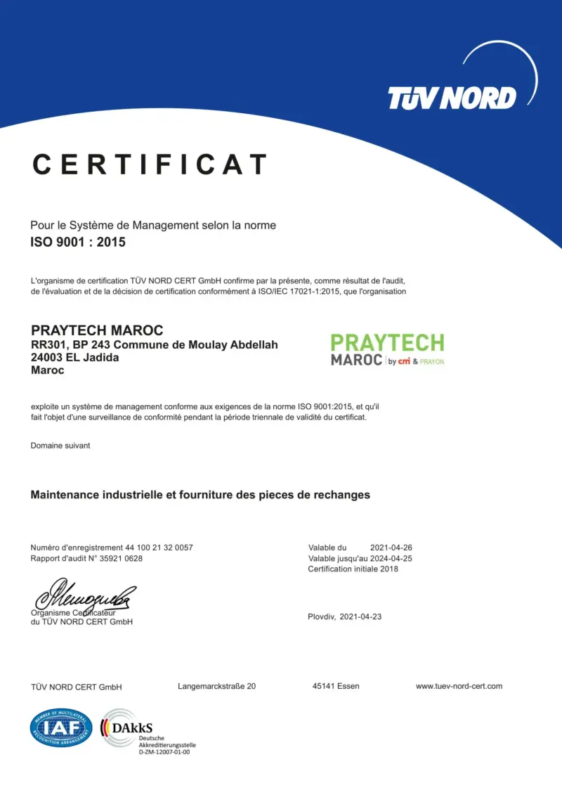

Dans un environnement commercial en constante évolution, maintenir des normes de qualité élevées est essentiel pour la satisfaction des clients et la pérennité des entreprises. Chez Praytech Maroc, nous sommes fiers d'annoncer notre engagement à reconduire notre certification ISO 9001:2015, une reconnaissance qui témoigne de notre dévouement envers l'amélioration continue et la gestion de la qualité.

Pourquoi la Certification ISO 9001 ?
La norme ISO 9001:2015 est l'une des certifications les plus reconnues au monde. Elle établit un cadre pour les systèmes de management de la qualité, axé sur l'optimisation des processus et la satisfaction des clients. Pour Praytech Maroc, obtenir et maintenir cette certification n'est pas seulement une obligation, mais un moyen de garantir que nos produits et services répondent aux attentes de nos clients tout en respectant les réglementations en vigueur.
L'Importance de l'Amélioration Continue
La reconduction de notre certification ISO 9001:2015 n'est pas une fin en soi, mais plutôt le début d'un nouveau cycle d'amélioration. Chez Praytech Maroc, nous croyons fermement que la qualité est un voyage, pas une destination. En intégrant des pratiques d'amélioration continue dans notre culture d'entreprise, nous nous engageons à répondre aux besoins évolutifs de nos clients et à anticiper les défis futurs.
Conclusion
La reconduction de la certification ISO 9001:2015 est une étape essentielle pour Praytech Maroc, démontrant notre engagement envers l'excellence et la satisfaction de nos clients. Nous sommes impatients de continuer à bâtir des relations solides avec nos partenaires et clients, tout en maintenant les normes les plus élevées de qualité et de performance. Grâce à notre engagement envers l'amélioration continue, nous sommes confiants dans notre capacité à répondre aux défis futurs et à saisir de nouvelles opportunités.